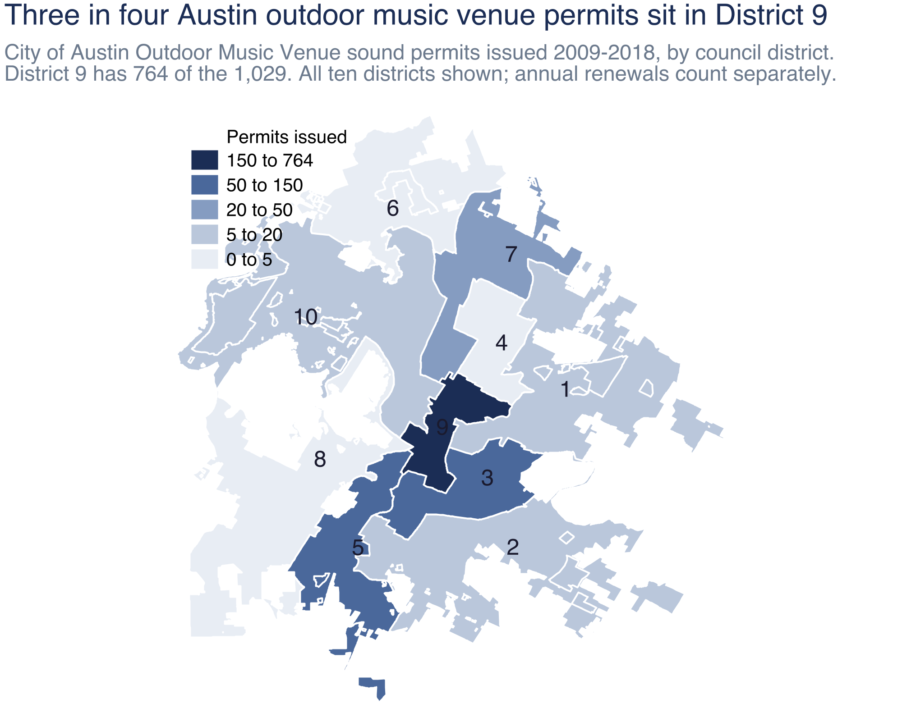

Austin's Musicians in the Numbers
The federal wage survey counts roughly 120 musician jobs in Austin. The Census Bureau estimates there are 2,126 people working as musicians here. Almost everything a policymaker sees describes the smaller group.
The working paper behind this story builds a fuller picture by triangulating public records that are rarely brought together: federal household microdata, state alcohol‑tax filings, city permits and budgets, benchmark data from peer states, and Austin's own music‑community surveys. That is how it surfaces the working musicians the standard wage numbers leave out.
One number, most of the story
of Austin musicians work for themselves
Against 10.4% of all Austin workers. That single fact explains why Austin's musicians are hard to see: the federal wage survey behind the usual “musician wage” asks employers, not workers, so 72 percent of the workforce is outside its sampling frame by construction.
What each source can and cannot see
The 120 is not BLS getting it wrong, and it is not a headcount of Austin's musicians. It counts one specific thing: wage-and-salary jobs on employer payrolls. By the survey's design, the self-employed, who are most working musicians, are not in it. The 2,126 is a household-survey estimate that does include them; like any survey estimate it carries a margin of error rather than being a hard count. Both are real. They measure different populations, and almost everything public policy is built around comes from the smaller one.
The gap that matters most
American Community Survey 2020–2024 five-year PUMS, Austin metro, employed adults 18–64 with positive earnings.
This estimate rests on just 77 Austin musician records in the survey, pooled over five years. With a sample that small, trust the broad comparison (musicians earn roughly half of what the typical worker earns), not the exact dollar figure of $28,700.
Not because they work less
Austin musicians report the same hours and the same weeks as the wider Austin workforce. A full-time schedule at about half the pay.
A regression that holds age, sex, education, hours, weeks and metro area fixed still places music occupations 25.2 percent below otherwise similar workers, so schedule length is not where the gap comes from. That is an association among the characteristics the survey records, not a causal estimate of choosing music.
The rooms
Comptroller mixed-beverage gross receipts, deflated to 2025 dollars. The tracked panel is 114 named Austin live-music rooms, identified from a research list of the city's venues and matched to state alcohol-tax records by taxpayer name and address; citywide is every Travis/Austin permit holder. The panel is a curated list, not a complete census, so it leans toward established central-city rooms.
That divergence may overstate a true decline in live music. Some performance likely shifted to informal or non-dedicated stages these datasets do not see, such as a coffee shop, restaurant, or brewery with a weekend act. Those settings tend to pay less, and less reliably, and are not where a full-time musician makes a living.
Why the aggregate fell
of the 20 rooms in the tracked panel whose last alcohol-tax filing came in 2020 or later were core live-music rooms
The rooms that stayed open trade at the same rate against 2019 as comparable non-music bars. The aggregate decline is not a per-room revenue gap. It is a room-loss gap: rooms close, and no one replaces them. Outdoor music venue permits issued by the City stand 31.9 percent below their 2014 and 2017 peak.
Concentrated in one part of Austin
District 9 is central Austin — downtown and the near-in corridors. Three in four of the city's outdoor-music-venue permits sit inside it, so downtown property values, downtown noise rules, and downtown parking press on this workforce harder than they do anywhere else in the city.

Source: City of Austin sound-ordinance permits (Outdoor Music Venue permits, 2009–2018), geocoded to council district. District 9 holds 764 of the 1,029 permits.
What the city spends on music
A 2019 city ordinance set the Live Music Fund at a fixed slice of a hotel-tax increase. Its budget therefore rises and falls with hotel and tourism activity, rather than being set each year by a City Council decision about what musicians need.
Nominal dollars per awardee, from City of Austin awardee lists.
A musician's expected grant depended heavily on which year they applied, and one cycle was skipped entirely. Predictability matters more than average size when a program serves people with irregular income.
The state, through the same office
Governor's office, Music, Film, Television and Multimedia Office. Same office, same session.
A statutory cap is not a measure of support. Georgia authorised $15 million a year for a music tax credit and paid out $0 across the program's five-year life. Ranked by dollars actually disbursed per resident, Texas sits at $0.32 against New York's $4.52. Texas is also the one state in this comparison where the amount authorised was actually spent.
The cost side
Index sets the United States at 100 in each category.
Real market rent has fallen 23.5% from its late-2021 peak, the steepest decline in the five metros compared. A study that showed only the run-up and stopped in 2022 would be describing a market that no longer exists. So a large part of the affordability squeeze looks more like a housing-cost problem than a broad cost-of-living problem.
Musicians expect to stay in music, and renters do not expect to stay in Austin
Both figures come from the same people: about 1,900 respondents to the 2022 Greater Austin Music Census answered both questions, so the gap reflects one person's two answers rather than two different groups. Housing tenure separates the stay-in-Austin answer more sharply than any other characteristic measured:
Self-selected online survey, respondents only; not comparable to the workforce.
Austin's cost problem is centered on housing, and its retention problem is centered on renters. The two look like facets of the same housing-cost challenge.
Something is working
of Austin musicians hold health coverage
That is about the same as the 87.7% for all Austin workers; the small difference is well within the survey's margin of error, so musicians are not measurably less insured than other workers. The 2022 music census found that health-insurance coverage among the musicians it surveyed had risen about five points from its 2014 survey, and credited the Health Alliance for Austin Musicians (HAAM) — a nonprofit founded in 2005 that has grown from 450 members to more than 3,100.
Musicians lean on public insurance far more than other Austin workers — roughly a quarter carry it, against about one in twenty — which is what pulls their total coverage up to parity even though they hold private employer coverage less often (77.9% against 84.7%). The SIMS Foundation, founded in 1995, delivers mental-health and substance-use care on a similar subsidised-fee model.
Try it yourself
The calculator below simulates a solo working musician's year using anchors from the study. Move the pay rate, the number of gigs, the setup and travel time. Turn policy levers on and off. The point is not the exact dollar figure. It is which lever moves it most.
Simulates one solo musician's year using anchors from the study. Read the full working paper (PDF).
Start with a scenario, then adjust the sliders
Gig work
Where they live
Policy levers
A policy hook
A meal and a drink tab worth $10 to $20 a gig adds up to roughly $700 to $1,400 a year at a typical gig count. Raising the per-hour rate by the same $20 raises the year by more than three times as much, because it multiplies through every performance hour rather than only every gig. A grant, a health-care subsidy, or a parking credit each closes a real gap on the cost side, and together they can add several thousand dollars in a year. None of them is a substitute for what a musician earns at the show.
That is why the levers that most reliably move a musician's year are the ones that either raise the rate directly (the city's $200 floor already sets a benchmark on city-commissioned work) or reduce the setup-and-travel drag on rate-hours (backline sharing, load-in windows, downtown parking during evening hours, and lease predictability at the rooms). The room-loss story in Section 5 of the working paper is a musician-pay story in a different guise: fewer central rooms means more travel time, more setup, and lower effective hourly.
This is a working paper, not a recommendation set. The point of the calculator is to make the shape of the trade-offs visible before the discussion of which lever to pull.
The calculator is a stylised model, not a prediction. It scales one solo musician's year from a small set of anchors drawn from the study and from public records. Every anchor is listed here.
Self-employment tax and federal income tax, health-care out-of-pocket costs beyond premiums, band-splitting on gig pay, instrument depreciation and replacement, retirement contributions, family or caregiving costs, side gigs outside music. It is a headline-year model for comparing policy levers, not a personal budget.
The calculator is a deterministic accounting identity, not a statistical estimator. It maps one musician's inputs to one year of income and cost through the equations below, returns point values with no sampling distribution and no standard errors, and estimates no population parameter. Every constant appears in the parameter table with its value and a flag for whether it is a data anchor or a modelling assumption, so a reviewer can trace or change any of them. Square brackets denote an indicator equal to 1 when a lever is on and 0 otherwise.
| Symbol | Range | Meaning |
|---|---|---|
| r | 40 to 200 | Performance rate, dollars per performance-hour |
| hp | 1 to 5 | Performance hours per gig |
| ht | 1 to 6 | Setup and travel hours per gig |
| nwe | 0 to 4 | Weekend gigs per week |
| nwd | 0 to 2 | Weekday gigs per week |
| W | 30 to 52 | Working weeks per year |
| x | 0 to 50 | Venue extras per gig, dollars |
| ℓ | 3 levels | Location: central, suburb, or exurb |
| [HAAM], [LMF], [park], [voucher] | 0 or 1 | Policy levers |
| Symbol | Value | Type | Basis |
|---|---|---|---|
| ρ | 0.20 | assumption | Weekend and prime-slot rate premium over weekday gigs |
| rentℓ | 1,600 / 1,250 / 1,050 per mo. | data anchor | HUD Fair Market Rent FY2026 and Zillow ZORI, central / suburb / exurb |
| comℓ | 50 / 180 / 290 per mo. | assumption | Illustrative vehicle and fuel cost by commute distance |
| δℓ | 0.85 / 0.70 / 0.55 | assumption | Share of gigs played downtown, by location |
| k | 15 per downtown gig | data anchor | Downtown evening garage rate |
| m0 | 450 per mo. | data anchor | Subsidised marketplace silver premium, single adult |
| mH | 50 per mo. | assumption | Net premium after HAAM subsidies |
| ALMF | 17,895 | data anchor | FY2026 average Live Music Fund award |
| Iother | 8,500 | data anchor | Teaching, sessions, streaming; national musician income-share surveys |
| S0 | 5,394 | data anchor | Median music-work spending, 2022 Greater Austin Music Census, 501 respondents |
| τ | 0.30 | data anchor | Federal housing cost-burden threshold |